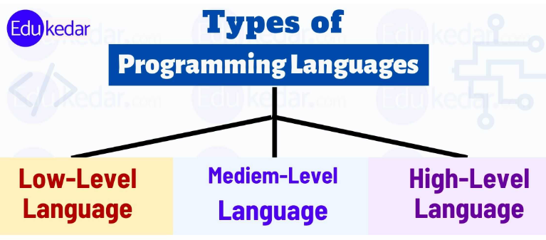

Programming Languages :
Programming languages are formal languages that are used to communicate instructions to a computer. They are the foundation of software development and allow developers to write code to perform specific tasks.
What is Language?
Language is a mode of communication that is used to share ideas, opinions with each other. For example, if we want to teach someone, we need a language that is understandable by both communicators.
What is a Programming Language?
A programming language is a computer language that is used by programmers (developers) to communicate with computers. It is a set of instructions written in any specific language ( C, C++, Java, Python) to perform a specific task.
Classification by Level :
Programming languages can be broadly classified into three levels based on their proximity to machine language and hardware:
-
Low-Level Programming Languages
Low-level languages are closer to machine language and provide more control over hardware resources. They directly interact with the computer's hardware and require an in-depth understanding of hardware architecture.
Examples: Assembly Language, Machine Code
-
Middle-Level Programming Languages
Middle-level languages, also known as "transitional" languages, strike a balance between low-level and high-level languages. They provide abstraction and ease of programming while still allowing some level of hardware-specific operations.
Examples: C, C++
-
High-Level Programming Languages
High-level languages are designed to be more user-friendly and closer to human language. They use natural language elements and are easier to read and write. These languages are more abstract and hide the complexities of the underlying hardware.
Examples: Python, Java, JavaScript, Ruby
There are several types of programming languages:
-
High-Level Programming Languages
High-level languages are designed to be more user-friendly and closer to human language. They use natural language elements and are easier to read and write.
Examples: Python, Java, JavaScript, Ruby
-
Low-Level Programming Languages
Low-level languages are closer to machine language and provide more control over hardware resources. They are less user-friendly and more challenging to read and write.
Examples: Assembly Language, Machine Code
-
Scripting Languages
Scripting languages are used for automating repetitive tasks and are often interpreted rather than compiled.
Examples: JavaScript, Python, Ruby, PHP
-
Object-Oriented Programming Languages
Object-oriented languages are based on the concept of "objects" that contain data and methods to manipulate the data. They promote code reusability and modularity.
Examples: Java, C++, C#, Python
-
Functional Programming Languages
Functional languages treat computation as the evaluation of mathematical functions and avoid changing state or mutable data.
Examples: Haskell, Lisp, Clojure
-
Procedural Programming Languages
Procedural languages use a series of procedures or routines to perform tasks. They focus on steps and procedures to accomplish a task.
Examples: C, Pascal, Fortran
Additional Types of Programming Languages :
-
Domain-Specific Languages (DSL)
DSLs are specialized languages designed to address specific problem domains. They provide expressive syntax tailored for a particular area of expertise.
Examples: SQL (Database Query Language), Regular Expressions (for pattern matching), MATLAB (for numerical computing)
-
Markup Languages
Markup languages are used to define the structure and presentation of documents. They are not programming languages in the traditional sense, but they play a crucial role in web development and document processing.
Examples: HTML (HyperText Markup Language), XML (eXtensible Markup Language)
-
Assembly Languages
Assembly languages are low-level languages that use mnemonics to represent machine instructions. Programmers use assembly language to interact directly with hardware components.
Examples: x86 Assembly, ARM Assembly
-
Concurrent and Parallel Languages
Concurrent and parallel languages are designed to handle concurrent execution and take advantage of multi-core processors.
Examples: Go (Concurrency support with goroutines), Erlang (for highly concurrent systems)
Popular Programming Languages :
Some of the most popular and widely used programming languages include:
- Python: Known for its simplicity, readability, and extensive libraries, Python is used for web development, data analysis, artificial intelligence, and more.
- JavaScript: A versatile language mainly used for front-end web development and building interactive web applications.
- Java: A general-purpose language known for its "write once, run anywhere" capability. It is widely used for enterprise applications and Android app development.
- C++: A powerful language used for system-level programming, game development, and performance-critical applications.
- C#: Developed by Microsoft, C# is used for Windows application development, game development with Unity, and more.
- Swift: An Apple-developed language used for iOS and macOS app development.
- Rust: Known for its memory safety and performance, Rust is used for systems programming and web assembly.
- PHP: Primarily used for server-side web development and creating dynamic websites.
Language Popularity and Trends :
The popularity of programming languages can vary over time. Some languages gain prominence due to their adoption in specific domains, while others decline in usage. Stay up-to-date with the latest trends and language rankings to make informed decisions for your projects.
Choosing a Programming Language :
When choosing a programming language for a project, consider factors such as the project's requirements, the language's suitability for the task, the availability of libraries and tools, and the skills of the development team.
Learning Programming Languages :
Learning programming languages requires practice and patience. Online tutorials, books, and coding exercises can be valuable resources for beginners. Start with a simple language and gradually move to more complex ones.
Advantages of Programming Languages :
Programming languages offer various advantages, such as:
- Efficient Problem Solving
- Increased Productivity
- Platform Independence
- Code Reusability
- Community Support